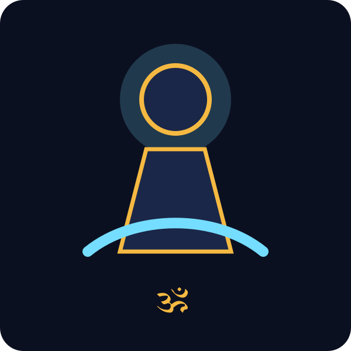
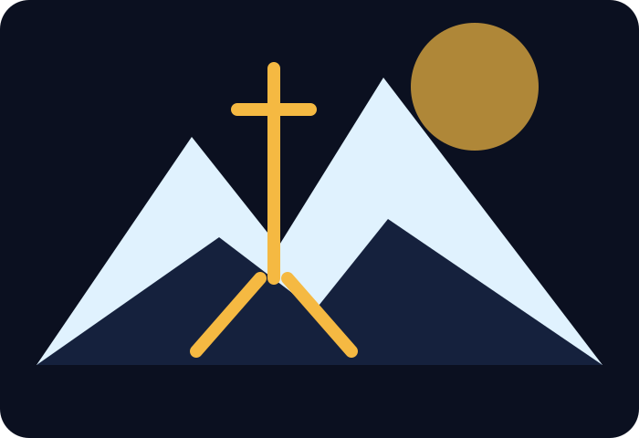
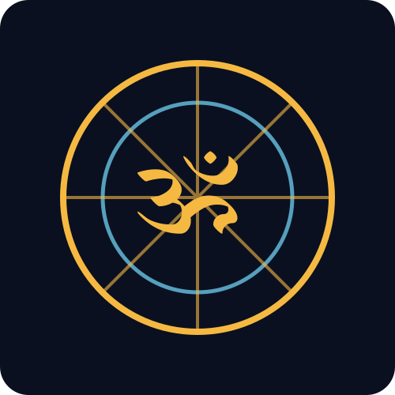

Trishul
Represents mastery over body, mind and ego; also creation, preservation and dissolution.
ॐ नमः शिवाय
A premium spiritual portal for Lord Shiva — original articles, mantra learning, Jyotirlingas, temple guides, meditation tools, festival knowledge and curated YouTube references.

“When the mind becomes still, Shiva is experienced within.”
Knowledge Foundation
Start with original, respectful summaries. Later these cards can become full CMS-managed articles.
Sacred Symbols
Represents mastery over body, mind and ego; also creation, preservation and dissolution.
The sound of cosmic rhythm and the pulse of creation.

A symbol of silence, tapasya and the highest state of consciousness.

The primordial vibration used for meditation and inner alignment.
Chant & Understand
Each mantra includes Sanskrit, transliteration, meaning, benefits and suggested repetitions.
Curated References
Use official YouTube embeds. Do not download or re-upload copyrighted videos.
Daily Sadhana
Simple browser-based counter for Om Namah Shivaya or Maha Mrityunjaya japa.
Suggested target: 108 repetitions.
Sacred Geography
Build each Jyotirlinga into a dedicated page with history, travel guide, map, darshan details and video references.
Temple Directory
Kashi Vishwanath, Kedarnath, Somnath, Mahakaleshwar and more.
Pashupatinath and Himalayan Shiva traditions.
Shiva temples in UAE, UK, USA, Mauritius, Australia and beyond.
Add location, routes, timings and official temple references.
Festivals
Best Approach
This package includes configuration examples for Strapi, Directus and Decap CMS. Best production path: start with Decap for free Git-based editing, then move to Strapi + PostgreSQL when the portal grows.
Deploy this static site now with free SSL and CDN.
Edit articles, mantras and videos through a browser using GitHub as storage.
Use PostgreSQL, media library, roles, drafts and APIs for large-scale content.